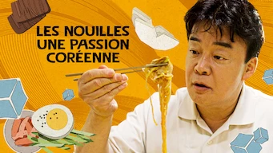
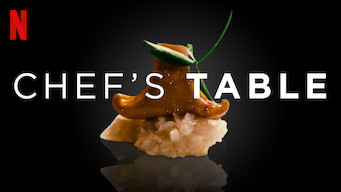
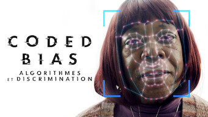

Les Documentaires
(par pays et par ordre alphabétique)
Corée du Sud
| Affiche | Information |
|---|---|
| Documentaire : Blackpink: Light Up the Sky Origine: Corée du Sud Sortie en 2020 Nb. épisodes: 1 Très complet avec/ une approche simple et efficace. |
|
| Documentaire : La Soupe coréenne : Une culture en ébullition Origine: Corée du Sud Sortie en 2022 Nb. épisodes: 3  sous-titres en coréens sous-titres en coréensIntéressant vis-à-vis de la culture culinaire coréenne. |
|
| Documentaire : Le porc : Une passion coréenne / 삼겹살 랩소디 Origine: Corée du Sud Sortie en 2020 Nb. épisodes: 2 sous-titres en coréensDocumentaire sur la cuisine coréenne. Pour les amateurs de bonne chair, vegan s'abstenir. |
|
|  |
Documentaire : Les nouilles : Une passion coréenne / 냉면 랩소디 Origine: Corée du Sud Sortie en 2021 Nb. épisodes: 2 sous-titres en coréensIntéressant vis-à-vis de la culture culinaire coréenne, avec parfois un aspect historique intéressant sur la provenance des différentes recettes. |
| Documentaire : The Reservoir Game Origine: Corée du Sud Sortie en 2017 Nb. épisodes: 1 Enquête par un journaliste sur la corruption en Corée du Sud et au Canada, qui finit paraître attaché à la maison bleue. |
Etats-Unis
| Affiche | Information |
|---|---|
|  |
Documentaire : Chef's Table Origine: Etats-Unis Sortie en 2019 Nb. épisodes: 1 Très bien. Je n'ai vu que l'épisode (S3E01) qui m'intéressait sur la nonne bouddhiste Coréenne (il y a 30 épisodes disponibles) |
|  |
Documentaire : Coded Bias : Algorithmes et discrimination Origine: Etats-Unis Sortie en 2020 Nb. épisodes: 1 Bon documentaire sur la dérive provoquée par les algorithmes en intelligence artificielle, principalement sur la reconnaissance faciale. |
| Documentaire : Dans l'inconnu : Les robots tueurs Origine: Etats-Unis Sortie en 2023 Nb. épisodes: 1 Documentaire sur l'intelligence artificielle appliquée aux drones, mais l'approche n'étant pas du tout scientifique, c'est pour les profanes. |
|
| Documentaire : The Game Changers Origine: Etats-Unis Sortie en 2018 Nb. épisodes: 1 Contrairement à une idée reçue, l'homme le plus fort du monde est végan, tout comme de plus en plus d'athlètes de haut niveau. Même Schwarzi est devenu végan. Ce documentaire vous explique pourquoi être végan est bon pour le corps, et comment l'industrie de la viande nous enfume depuis des décennies. |